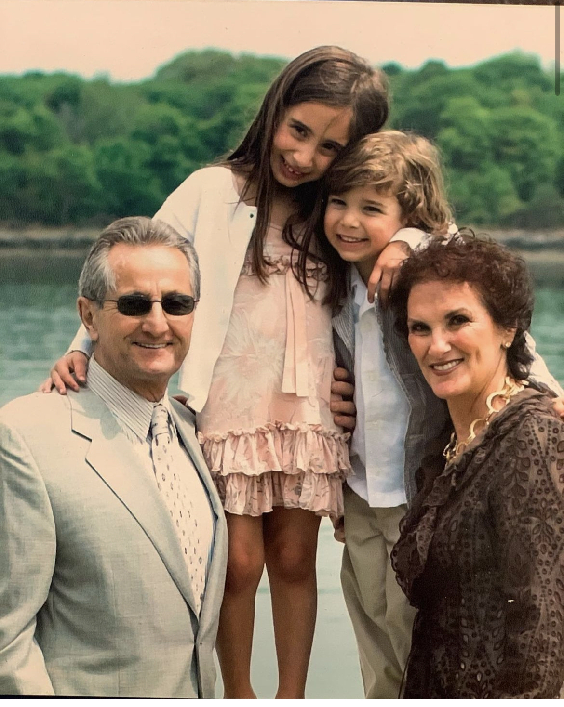

Alessi considers himself to be a life-long risk-taker. He credits his mother, who constantly looks after him, and his former boss, who’s pushed him to go outside his comfort zone; he also counts on friends and family to always look out for him. However, he can be very anxious in front of a larger crowd or even a small class and has trouble presenting in front of them. I have been born and raised in New York City and my Parents are from long Island my dad is from Plainview and my mom is from Huntington. They lived only a town over from one another and they also went to the same church growing up but never meet one another. They were introduced to one another threw my mom's sister and my dad's brother. My mom's family came over from Italy. My grandfather Fred Colombo was born in 1935 in East New York Brooklyn. My Papa who is my grandfather his parents are from Pomigliano D’Arco Napoli Italy. My Papa’s parents Vincenzo Colombo, Maria Colombo both came through Ellis Island at different times. However, they both ended up in New York City and created a family in Brooklyn. My grandfather grew up having a sister. My Grandfather grew up very poor and had to work from the bottom up. He started off working as a newspaper boy trying to sell papers on the street as his father worked for a Mason worker in Brooklyn while his mother stayed at home and took care of his younger sister. Vincenzo later created his own company as a mason construction company which helped build Bricks, blocks, and stone some of the most common and durable materials used in building skyscrapers.
